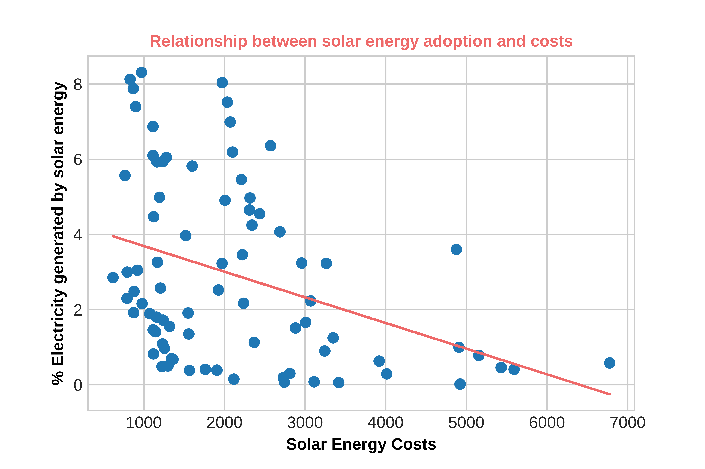

Adopting Solar Energy: The Path to a Cleaner Earth
Knowing where solar energy can be utilized is crucial. Solar energy is a renewable resource, capable of providing a constant source of power for the future. It also helps to lower greenhouse gas emissions and can decrease energy costs for households and businesses. By identifying where solar energy can thrive, we can work towards a more sustainable and environmentally-friendly future.
The utilisation of solar energy and other renewables is vital for the longevity of life on Earth, but for their implementation to be successful, income and development inequality has to cease. This page will highlight which countries' solar-adoption would benefit most and why implementation world-wide is not yet possible.
IRRADIANCE & OPTIMAL COUNTRIES
Contrary to popular assumption and as depicted by the clusters, equatorial nations are not always those with the most solar energy potential. In reality, data indicates that deserts farther from the equator, where there is high irradiance and low precipitation, are the optimum places for solar energy systems. The choropleth and clusters below illustrate this, suggesting that regions 2000-4000Km away from the equator with low precipitation (deserts) tend to have higher irradiance.
EMISSIONS & OPTIMAL COUNTRIES
A primary advantage of solar energy is its reduction of fossil fuel dependency and greenhouse gas emissions. Countries with high electricity consumption typically release more GHGs, as seen in the scatterplot below. These nations can reduce their emissions and reliance on fossil fuels by switching to solar power. This data is replicable as its automation allows for analysation over time, as the API updates its data.
CONSUMPTION & OPTIMAL COUNTRIES
To determine the optimal countries for solar energy adoption, I regressed electricity consumption on average temperature. The result of this reveals a negative relationship between the two. However, when the average temperature is above 25˚C, the electricity consumption is more spread as developed countries with high temperatures, like Qatar/Kuwait, use more energy for air conditioning, while the less-developed majority cannot afford to. This indicates that switching to solar favours countries at temperature extremes.
DEVELOPMENT & OPTIMAL COUNTRIES
As seen, solar adoption depends on a country's development and ability to afford initial costs. Developed countries have seen increases in solar capacity and decreases in costs, while less-developed countries like Vietnam are experiencing initial cost increases.
The correlation from the regression between percentage of solar energy generation and solar energy costs is negative, with higher costs resulting in less usage. However, low costs do not yet result in higher usage due to less-developed countries' limited monetary ability to switch to solar.

CONCLUSION: OPTIMAL COUNTRIES
By gathering all the information presented, the best country to adopt solar energy is one that has a desert, is within 2000 to 4000km of the equator, has high energy consumption and high GHG emissions, and is well developed. Following these criteria, countries like China, the USA and Australia are obvious candidates with their large deserts, developed economies and high consumption and emission industries. However, if we remember that below 2000km away from the equator there were countries with very high irradiance, we reach our honeypot site: the Persian Gulf. Countries like UAE, Qatar and Kuwait boast large deserts, strong economies and absurd amounts of emissions due to their >94% fossil fuel usage as an electricity source.
Further work in these countries is necessary to allow for a legislative implementation of this adoption, for a more sustainable and environmentally-friendly planet. Furthermore, the replicability of this study is high, with access to all data sources and manipulations and so should be carried out for other renewable energy sources.
CHALLENGES:
DATA CLEANING & ANALYSIS
In my data cleaning and analysis process, I encountered a number of challenges. One issue I faced was that Vega-lite had difficulty reading my raw Github CSV data, so I had to input the values manually to overcome this problem. Additionally, I had to scrape data from a PDF and use PyPDF2 to do so. This required splitting the page into cells by " " and manipulating the dataframe to resemble the table I wanted from the PDF.
To batch download emissions data that updates whenever the API updates, I used for-loops and the "requests" library. In order to complete machine learning visualizations, I had to create NumPy matrices by creating a list of lists for the X-axis and a list for the y-axis. I used KMeans for clustering and Linear Regressions from the scipy and sklearn libraries.
I also encountered challenges when reading large files, as pandas was unable to do so initially. To overcome this issue, I had to read the files in chunks and then concatenate them, creating masks to filter the data I needed. In addition, a few of my regressions returned low R-squared values, which required me to change some underlying assumptions of my project. This led me to discover correlated data that prompted me to re-evaluate my project. Initially, I had been trying to prove that countries on the equator would be the best to adopt solar energy, but I had to reformulate my argument when faced with the facts of the data.